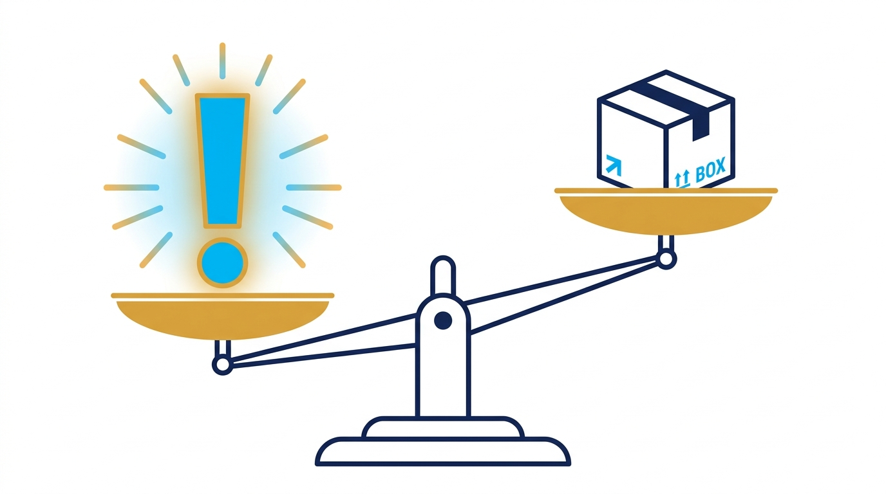
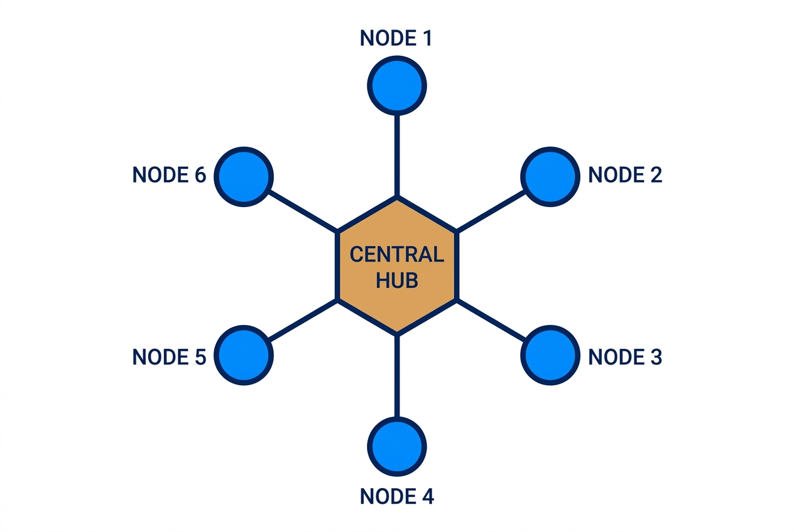
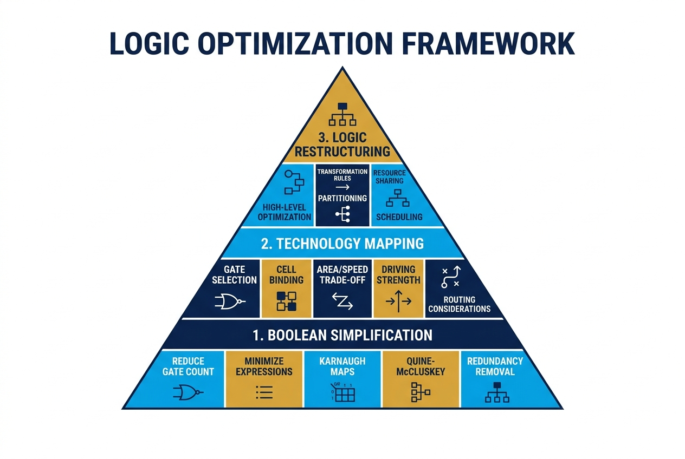
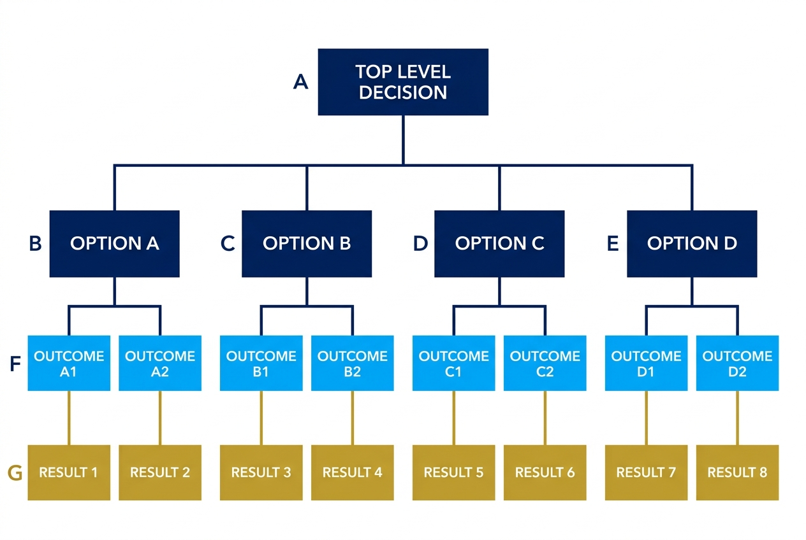
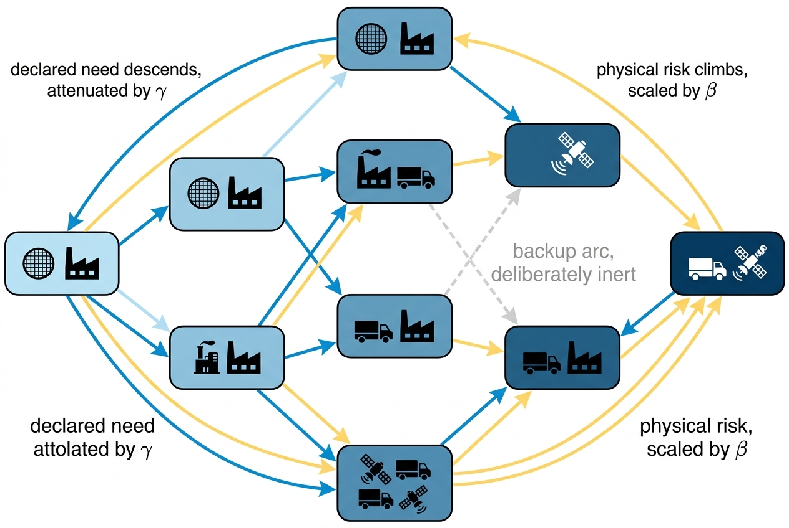
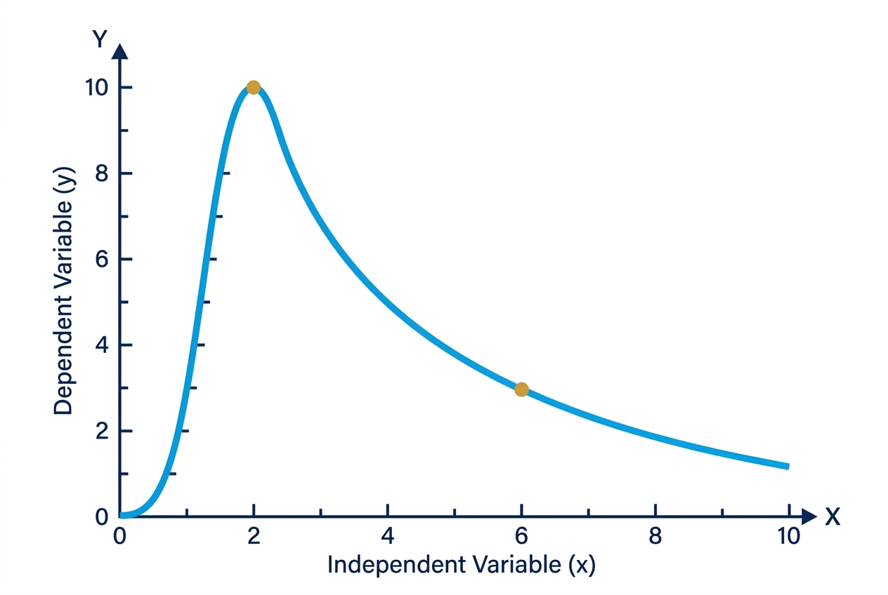
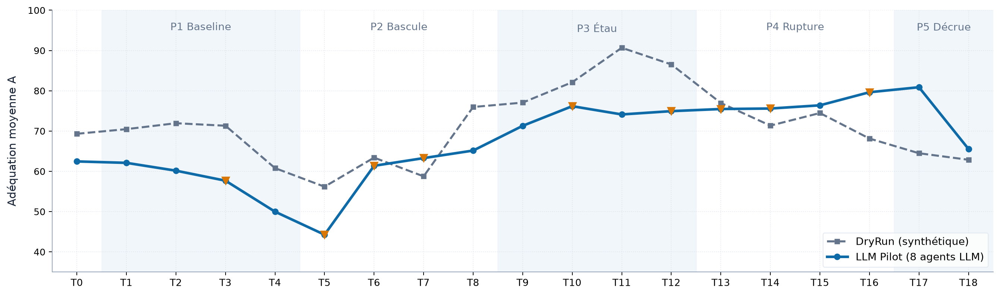

MSc in Computational Software Techniques in Engineering : Digital Engineering Design
Measuring the gap between declared and real urgency
SupplyScore, a cognitive digital twin that tells you
when you are not worried enough, before the line stops.
1
THE PROBLEM
Urgency is felt, not measured
- Coordinators triage by what is loudest instead of what matters most
- The Mere-Urgency Effect makes a minor late parcel outrank a severe wafer shortage that stops an assembly line six weeks later
- The default human response to delay is to declare every shipment as critically urgent
- This "crying wolf" cycle saturates premium transport capacities and causes severe cognitive fatigue for supply chain teams
- Traditional scheduling systems (MRPs) remain operationally fragile because they completely ignore these subjective cognitive states
- No existing tool formally measures the mathematical gap between subjective declared urgency and objective physical reality

2
WHAT WAS BUILT
Two flows, one score
- Real urgency Ur is computed from 6 physical KPIs (time, capacity, performance, risk, cost, CO₂) using noisy-OR to prevent double-counting
- These physical KPIs are weighted using the Triangular Fuzzy Best-Worst Method (F-BWM) to solve non-linear constrained optimization
- Declared urgency Ud is elicited via human pairwise comparisons (AHP) on 4 subjective criteria, guarded by a strict consistency check
- The system propagates subjective urgency downstream and physical risk upstream through a Directed Acyclic Graph (DAG)
- Adequacy Score A(t) measures the final gap. It uses prospect theory to penalize Hidden Risk exactly 2.25× more than False Urgency





A(t)
Output
Score
Score
3
DELIVERED
Built for production
- 65 Python modules, backed by 1,425 unit tests and 90%+ code coverage
- Multi-tenant SQLite architecture ensures total data isolation and security between competing suppliers
- Strict MutationService intercepts all data writes to guarantee complete forensic auditability
- The stochastic PERT engine runs 10,000 Monte Carlo simulations to calculate objective delay probabilities
- Real-time Dash interface processes the AHP questionnaires and instantly outputs PROMETHEE II priority rankings


4
THE PROOF
HÉLIOS: the chip crisis replayed
- A serious game validated the twin against 12 historical supply chain disruptions across 8 global nodes
- The simulation accurately modeled the 2021 Texas freeze, the Suez Canal blockage, and the Taiwan drought
- Over 18 rigorous turns, we compared human operator decisions against 8 autonomous LLM pilot agents
- Nothing told the digital twin which node mattered most during the cascading failures
- It found the semiconductor foundry on its own and successfully predicted the exact week the final assembly line would halt



5
NEXT
From weekly review to live arbitration
- Phase 1: Deploying the frozen instrument across ALTEN's aerospace tier-1 supply networks next quarter
- Phase 2: Calibrating the Prospect Theory thresholds using live operator feedback and historical anomaly data
- Phase 3: Full integration with live SAP ERP data streams to replace the weekly manual questionnaire cycle
- Phase 4: Launching autonomous decision-guidance agents to proactively suggest optimal expediting paths and transport modes